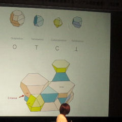

The Steel Hut
２０１１年
０７月３０日（土）
ＴＩＭＡ
Toyo
Ito
Museum of
Architecture,Imabari
がオープンした。
ちなみに、右端で
紫色の服を着ているのは
奈良の薬師寺の山田管主です。
退治されたり、封印されたりは、
しませんでした。
ヨカッタ。ヨカッタ。
畏（おそ）れながら、
サインを頂いて仕舞いました。

０８月２１（日）
丹下先生が手がけられた
今治市公会堂にて
アートと建築によるまちづくり
伊東豊雄×日比野克彦
司会は、中野美奈子アナ。
切頂八面体（ピンク）、
切頂四面体（ブルー）、
立方八面体（イエロー）を
組み合わせて
空間を充填するという
アルゴリズム。
ぶっ飛んでます。
しびれます。
一辺が3メートルの
正三角形のタイルと
正方形のタイルを
貼り合わせた多面体建築。
これを、平面グラフの
彩色問題として
とらえてみた。
四色が、必要だろうか？
三色で、塗り分けられる
だろうという予想を立てた。
まず、屋根の部分は
二色で塗り分け可能だ。
そして、側面の壁を、
試行錯誤しながら
三色で塗り分けた。
ゆえに、
スティールハットの
外観（表面）は
三彩色可能である。
(q.e.d.)
参考文献
けんちく世界を
めぐる１０の冒険
伊東豊雄建築塾 編著
伊東豊雄読本―２０１０